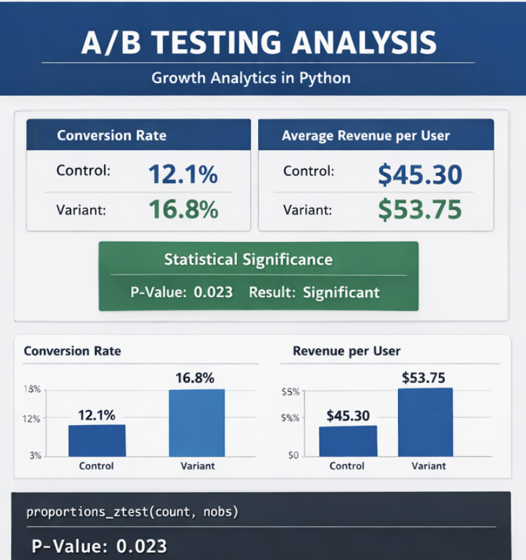

Key Projects

Call Centre Performance Dashboard
Designed a dynamic Power BI dashboard to track CSAT, agent efficiency, and response times, enabling management to improve customer experience and reduce operational bottlenecks.
View Project

A/B Testing & Conversion Analysis
Conducted end-to-end A/B testing with Python and statistical validation, providing actionable recommendations that guided product optimization and growth strategies.
View Project
Streaming Data Insights
Performed exploratory data analysis to identify trends in user engagement and content popularity, producing visualizations that informed platform strategy.
View Project
Workforce Analytics Dashboard
Developed a SQL and Power BI solution to analyze employee engagement, attrition trends, and compensation insights, empowering HR to make data-driven decisions.
View Project